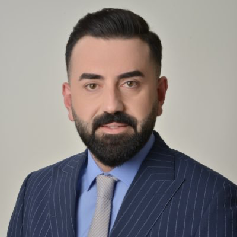
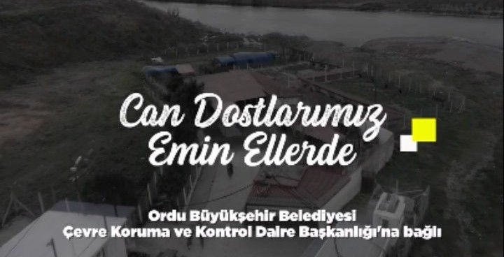
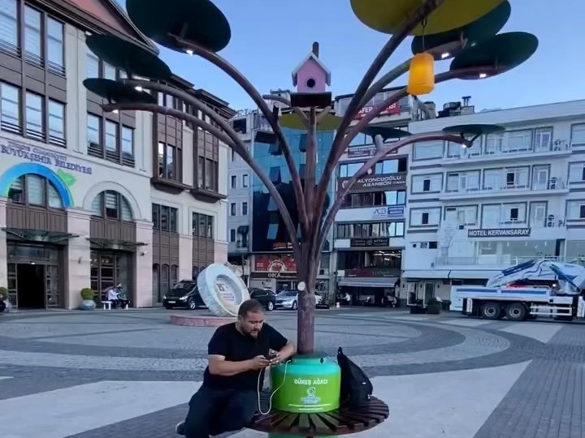
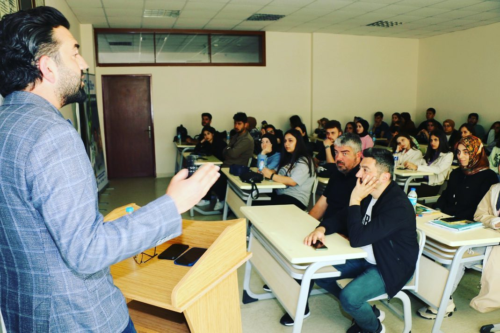
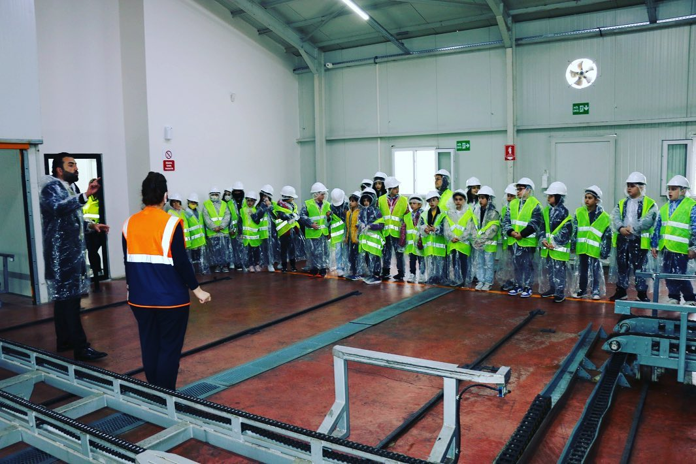
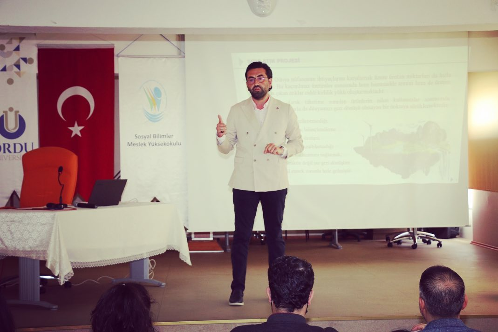
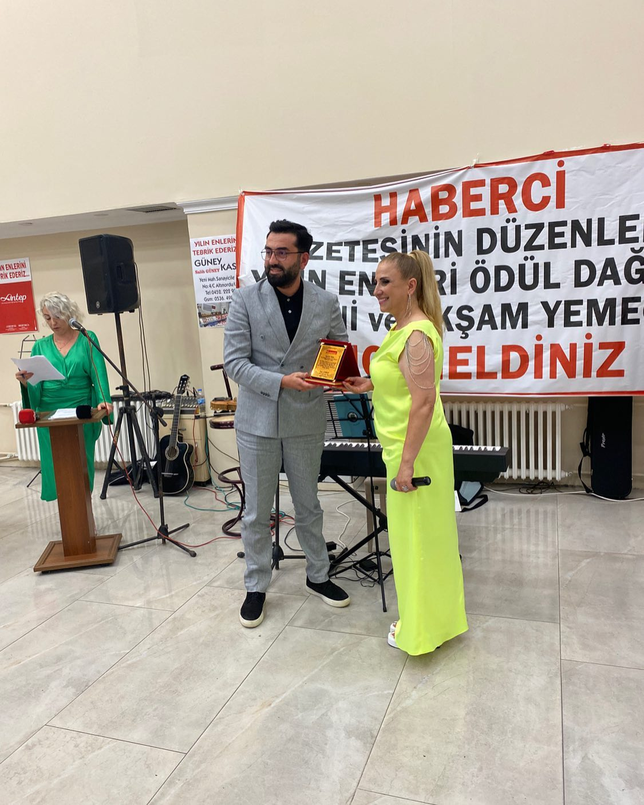
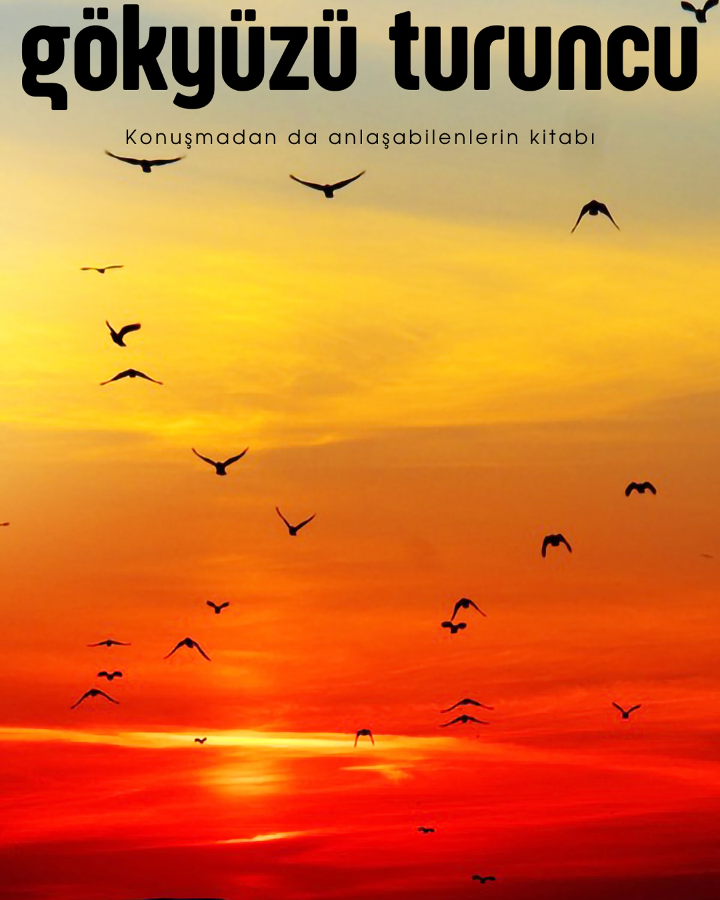
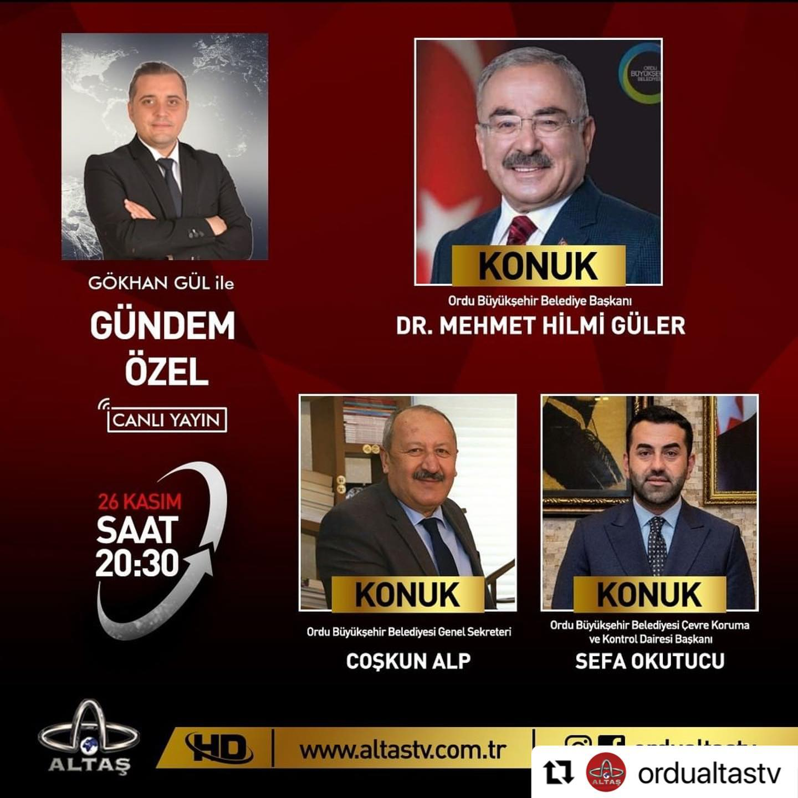
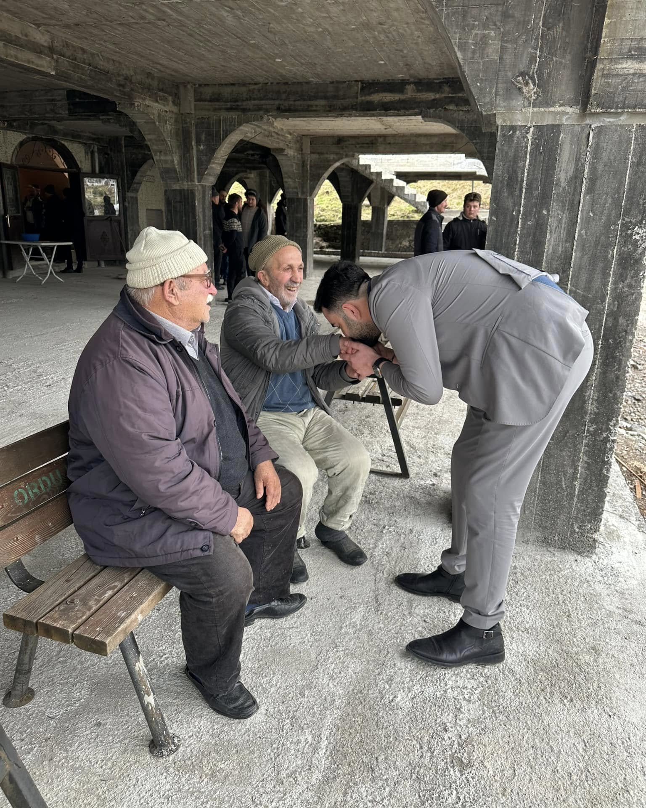

Dr. Sefa Okutucu · Siyaset Bilimi ve Kamu Yönetimi
Ekonomist. Ordu'da çevre, sıfır atık ve hayvan hakları alanında kamu hizmeti yürüttü. Devlet, egemenlik, insan hakları ve küresel siyaset üzerine düşünüyor, yazıyor.
Hakkımda

Çaybaşı'nda yetişti, Ordu'ya hizmet etti. Ekonominin diliyle yerel yönetimin gündelik sorunlarını — atık, su, çevre, can dostlarımız — aynı masada konuşmayı savunuyor.
Siyaset bilimi ve kamu yönetimi alanında doktora yapan Sefa Okutucu, Ordu Büyükşehir Belediyesi'nde Çevre Koruma ve Kontrol Dairesi Başkanı olarak görev yaptı. Bu dönemde Karadeniz Bölgesi'nin en büyük ve en kapsamlı Sokak Hayvanları Hastanesi ve Rehabilitasyon Merkezi hizmete girdi; sıfır atık eğitimleri okullardan üniversitelere kadar yaygınlaştırıldı.
Daha sonra OSKİ'de Çevre Koruma ve Su Havzaları ile Proje şube müdürlüklerinde çalıştı. Bugün devlet, egemenlik, insan hakları ve küresel siyaset üzerine yazıyor; ilk kitabı Gökyüzü Turuncu üzerinde çalışıyor.
İlgi ve uzmanlık alanları
01
Büyükşehir ölçeğinde birim yönetimi, bütçe ve kaynak planlaması, kurumlar arası koordinasyon.
02
Atık ayrıştırma, tıbbi atık sterilizasyonu, iklim değişikliğiyle mücadele ve çevre bilinci eğitimleri.
03
Sokak hayvanlarının tedavi, rehabilitasyon ve bakımı; 5199 sayılı Hayvanları Koruma Kanunu uygulamaları.
04
Egemenlik, devlet aklı, insan hakları ve uluslararası ilişkiler üzerine okuma ve yazılar.
Öne çıkan çalışmalar

Ameliyathaneler, yoğun bakım, röntgen ve laboratuvarı, ambulanslarıyla Sokak Hayvanları Hastanesi ve Rehabilitasyon Merkezi hizmete girdi; TRT Haber'de ulusal basına taşındı.
Instagram'da izle →
Tamamen geri dönüşüm malzemesinden yapılan, güneş enerjisiyle telefon şarj edilebilen ve buluşma noktası olarak kullanılan kent mobilyası.
Instagram'da izle →
Ordu Üniversitesi Eğitim Fakültesi'nde "Topluma Hizmet" derslerine katılarak öğrencilere sıfır atık ve atık yönetimi sunumları yapıldı.
Instagram'da gör →
İlkokul öğrencileri katı atık ayrıştırma ve tıbbi atık sterilizasyon tesislerini, hayvan bakımevini ve hastaneyi gezerek sıfır atığı yerinde öğrendi.
Instagram'da gör →
Ordu Üniversitesi Sosyal Bilimler Meslek Yüksekokulu'nda iklim değişikliği, sıfır atık ve sokak hayvanları üzerine öğrencilerle buluşma.
Instagram'da gör →
Haberci Gazetesi'nin düzenlediği "Yılın Enleri" ödül töreninde hizmet ödülüne layık görüldü.
Instagram'da gör →Kariyer

Kitap
"Konuşmadan da anlaşabilenlerin kitabı." Kahve eşliğinde, sessizlikle yoğrulan, silinip yeniden başlanan cümlelerden doğan ilk kitap.
YakındaBasında

Büyükşehir Belediye Başkanı Dr. Mehmet Hilmi Güler ve Genel Sekreter Coşkun Alp ile Ordu'daki çalışmalar ve projeler.
Haftanın konuğu olarak radyo söyleşisi.
Funda Altaş Şimsit'in sunumuyla sabah programı konuğu.
Emrah Özdilek'in sohbet programında konuk.
Memleket
"Tevazu, samimiyet ve istikrarla."
Çaybaşı, onun için bir görev yeri değil, yetiştiği yer. Tarihi Asak Camii'nde cuma namazı sonrası hemşehrileriyle sohbet etmek, memleketin derdini yerinde dinlemek, kamu hizmetini anlamanın en kısa yolu.

İletişim